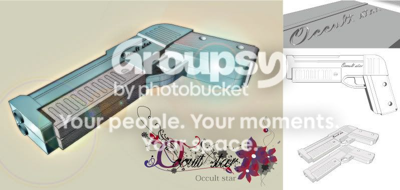

=================================================
` แบบฟอร์มสมัครตัวละคร `
=================================================
ชื่อ & สกุล : [ สองแบบเท่านั้น แฟนตาซียุโรป & ญี่ปุ่น * ห้ามเอาชื่อตัวละครในการ์ตูนหรือนิยายอื่นมาเด็ดขาด !! ]
Blue Eye
ชื่อเรียก : [ ชื่อเล่นนั่นแล ]
Blue Eye
เผ่าพันธุ์ : [ Titania , Dominion , Emil & Half ( บอกด้วยลูกครึ่งอะไร ? ) ]
มนุษย์ Emil
อาชีพ : [ ตามในเกมส์เลยนะ =w=; ]
ขโมย Gunner
อายุ : [ Titania > 100 ปี ]
ไม่ทราบ
เพศ : [ ชาย , หญิง , กระเทย , ทอม บลา ๆ =[]= !! เอามาเถอะ ! ]
ไม่ทราบ
ลักษณะภายนอก : [ ความสูง & น้ำหนัก , สีผม , สีตา , ทรงผม ลักษณะทางกายภาพทั้งหลาย ]
ไม่ทราบแน่ชัด ส่วนใหญ่พบเจอในเวลากลางคืน ในชุดดำสนิทพบเห็นเพียงดวงตาสีน้ำเงินสวยงามจึงได้ชื่อว่า จอมโจร บลูอาย
ลักษณะการแต่งกาย : [ ขอละเอียดยิบ ๆ !! ไม่จำเป็นต้องเหมือนในเกมส์ ! แต่อย่าซ้ำการ์ตูนก็พอ !! * มีรูปก็ได้ แต่ห้ามเอารูปในการ์ตูนเรื่องอื่นมาโพส ! แต่ถ้าดัดแปลงมาหน่อยก็โอ ! ]
ชุดดำสนิท
ลักษณะนิสัย : [ * สำคัญที่สุด !! ... เจ๊สับเละ !! ]
เอาแต่ใจตัวเอง ฉลาดหลักแหลม มุ่งมั่น ขี้เล่นรักสนุก ทำทุกสิ่งทุกอย่างโดยเตรียมการวางแผนไว้หมด รักความยุติธรรม ชอบช่วยเหลือผู้อื่น อุมดมการน์แรงกล้า
สิ่งที่ชอบ : [ ว่ามาเถอะ ]
สมบัติ ความเร้นลับ เรื่องท้าทาย ช่วยเหลือผู้อื่น
สิ่งที่ไม่ชอบ : [ ว่ามาเช่นกัน !! ]
การโกหก ไม่ชอบให้ใครมาสั่ง ความว่างเปล่า
อาวุธ : [ จะให้มันมีเอกลักษณ์ยังไงก็ได้ แต่ขอให้อยู่ในขอบเขต ! อย่าให้มันเว่อมากก็พอ ! โอเค๊ ? ]
อาวุธขว้างทุกชนิด อาวุธคู่ใจปืนพกสั้นขนาดเล็กชื่อ Occult star ตัวปืนขนาดลำกล้อง .22 ตัว ตัวกระบอกสีเงินวาวผสมสีฟ้าอ่อนทำจากโลหะชนิดพิเศษโอลิฮาก้อนผสมtear of saint ด้ามจับเป็นหนังสีขาวทำจากหนังของมังกรฟ้า ยิงด้วยกระสุนบรรจุพลังเวทย์มนต์ทุกชนิด ปืนนี้ต้องเป็นผู้ใช้เวทย์มนต์ถึงจะยิงได้เพราะต้องอัดพลังเวทย์ลงไปด้วย ในโลกมีเพียงสามกระบอกที่เป็นแบบนี้ ตัวปืนนั้นเลือกเจ้าของด้วยเช่นกัน
ความสามารถพิเศษ ( Versus ) : [ เรียกอีกอย่างว่า `Skill` หมายความว่าเป็นทักษะพิเศษที่นอกเหนือจากอาชีพของตน ! ใส่มาเท่าที่อยากจะใส่ ]
Skill
ยิงปืนพลังเวทย์มนต์ได้ สามารถมองในที่มืดด้วยตาเปล่า ยิงปืนได้เก่งกาจเกินมนุษย์ธรรมดา สามารถยิงกระทบแทนนอนเข้าสู่เป้าหมายอย่างเหลือเชื่อปืนเป็นปืนพกสองมือ จึงสามารถใช้เวทย์ผสมสายธาตุต่างๆได้ หลบหนีได้อย่างเหลือเชื่อจนเหมือนหายตัว
1. METEOR SHOWERS - MAX SHOOTER (MS.) ถอดปืนเป็นสองกระบอก ยิงรัวเป็นชุด ความเร็วในการยิง เกินกว่า 100 นัดต่อวินาที รูปแบบการยิงจะเป็นลำแสงมากมาย ไม่ต่างกับฝนดาวตก พิสัยการทำลายวงกว้าง ไม่ต่างกับปืน ลูกปลาย หวังผลให้เป้าให้แหลกละเอียดในพริบตา
ข้อดี อัตราการเข้าเป้าแน่นอน รุนแรง
ข้อเสีย ไม่เหมาะกับพิสัยไกล ระยะหวังผลน้อย
2. STAR DUST - MAGIC HOMING TAGETING (MHT.) ยิงกระสุนพลังเวทเข้าหาเป้าหมายแบบนำวิถี เวลายิงจะมีแนวแสงเป็นลำยาวไม่ต่างกับดาวหาง พิสัยไกล
ข้อดี อัตราการเข้าเป้าแน่นอน แม่นยำมาก
ข้อเสีย ใช้เวลานานต่อการยิงแต่ละครั้ง ไม่เหมาะกับการต่อสู้ประชิด
3. SUPERNOVA or BLUE EYE SHOT - LOGON TAGETTIVE (LT.) ถือเป็นไม้ตายสร้างชื่อเพราะความแม่นยำเกินบรรยายไม่ว่าจะอยู่ในสถาณกาลใด หากโดนเข้าไปไม่เพียวยังผลตามสายธาตุที่ยิงแต่เมื่อเข้าเป้า จะระเบิดแตกตัวออกตามชนิตกระสุนที่ยิง ไม่ต่างกับการระเบิดของดวงดาว พิสัยกลาง
ข้อดี อัตราการเข้าเป้าแน่นอน แม่นยำมากที่สุด
ข้อเสีย ความรุนแรงจะถูกลดทอนลงตามสภาพแวดล้อมที่ยิง
4. BIGBANG - SHILD อัดพลังเวทย์เข้าด้ามปืน หรือปลายกระบอกปืน ถึงแม้ว่าจะเป็นวัตถุเวทย์มนต์ทรงพลังก็ต้องใช้เวทย์สนับสนุน เพื่อให้ได้อาณุภาพในการป้องกันมากขึ้น พลังป้องกันต้านทานความรุนแรง ไม่ต่างกับโล่ห์อาคมคุณภาพสูง ใช้ปัดหรือตั้งรับได้หลากหลาย
ข้อดี สามารถตั้งรับและโจมตีได้ในตัว
ข้อเสีย การป้องกันขึ้นอยู่กับการหันทิศทางของตัวปืน จึงมีมุมอับอาจโดนลอบโจมตีจากจุดนั้นได้
5. GREAT BARRIER - MAX MAGIC DEFENSIVE (MMD) ใช้กระบอกปืน ทำเครื่องหมาย X อัดพลังเวทย์ขั้นสูงลงในกระบอกปืนทั้งสอง สร้างม่านบาเลียรอบตัว
ข้อดี สามารถตั้งรับการโจมได้ดีมากไม่สามารถทำอันตรายอะไรได้เลยรอบทิศทาง
ข้อเสีย ใช้พลังมากป้องกันได้ไม่นาน ขึ้นอยู่กับพลังและกำลังใจของผู้ใช้
6. OCCULT STAR SHOT - MAX MAGIC OFFENSIVE (MMO.) ไม้ตายขั้นสุดยอด โดยการรวมตัวของปืนทั้งสองกระบอก พลังเวทย์ทุกสาย หรือสายใดก็ได้รวมถึงสายผสม พิสัยการทำลาย เกินหยั่งถึง เปลี่ยนแปรผันตามความต้องการของผู้ใช้รวมไปถึงความสามารถของผู้ใช้เองด้วย พลังทำลายเป็นได้หลากหลาย ความรุนแรงถึงขั้นทำลายได้ทั้งเมืองได้ภายในพริบตา
ข้อดี พลังทำลายแน่นอนแม่นยำเกินหยั่ง
ข้อเสีย ใช้พลังมาก ขึ้นอยู่กับพลังของผู้ใช้ อณุภาพจึงไม่เสถียร แต่หากใช้เป็นแล้วถือเป็นไม้ตายเผด็จศึกได้เลย
ความสามารถพิเศษ ( Other ) : [ ความสามารถพิเศษที่ไม่เกี่ยวกับการต่อสู้ อาทิเช่น กินจุ อะไรประมาณนั้น =w=/ ]
ทำเรื่องชวนปวดหัวต่อเป้าหมายในการโจรกรรมได้ไม่มีใครเกิน ไม่มีกุญแจหรือประตูไหนที่ไม่สามารถปลดล๊อค และถอดรหัสได้
ประวัติตัวละคร : [ * ไม่บังคับใส่ ]
ตรอดหลายปีเป็นที่โจทย์ขานของชาวบ้านว่ามีจอมโจรที่ชอบช่วยเหลือชาวบ้านอันมีดวงตาสีฟ้าสวยงาม และความแม่นยำในการใช้ปืน จึงได้สมยานามว่า Blue eye ทางการไม่สามารถทำอะไรเขาได้ ไม่มีใครเคยจับตัวได้เลย หลบหนีหายไปได้ทุกครั้ง จุดมุ่งหมายสูงสุดเพื่อตามล่าหาสมบัติชิ้นสำคัญชิ้นหนึ่ง....
ETC : [ อยากเพิ่มเติมอะไรเชิญเลย ]
-ความสัมพันธ์ : ภูติที่สิงสู่อยู่ใน Occult star ชื่อ calm คราม รูปร่างคล้ายมนุษย์แต่มีปีกคล้ายแมลงไม่มีเพศ มีอายุหลายร้อยปี
-อื่นๆ : เนื่องจากตัวตนของเขาเป็นปริศนาที่มาจึงไม่แน่ชัด
อยากจะบอกอะไรคนแต่งมิ ? : [ * บังคับบอก ฮา ]
ไม่รู้จะเขียนอะไรดี เพราะเจ๊เทียร์เป็นแรงบรรดานใจของแมวเลยก็ว่าได้
=================================================
ปรับข้อมูลเพิ่มเติม ควรไม่ควรแล้วแต่จะโปรดเงี๊ยววว =^-.-^= /


 ไปไว้จริง รอรอบ 2จะผ่านมะนิ เดี่ยวทำลิงค์ให้ใหม่ครับ
ไปไว้จริง รอรอบ 2จะผ่านมะนิ เดี่ยวทำลิงค์ให้ใหม่ครับ
 เน็ตเจ๊ง
เน็ตเจ๊ง